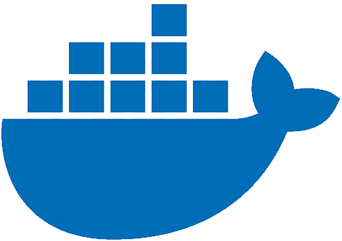
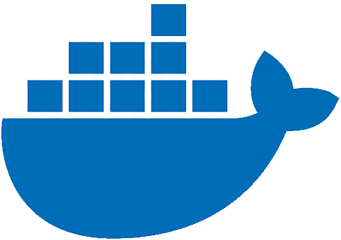

WEB
DEV
FOR
HIRE
Name's Noah
Born and raised in Austin, Texas
I'm a tech head with a background in computers and electrical engineering
I'm looking to shift from my background in embedded linux development to full stack development
The pages you're looking at are a reflection of my personality and desire to move towards my goal of mastery of my personal tech related pursuits
If you're looking for someone who isn't afraid to work on a large breadth of technical challenges that involve the web, I'm your guy


 

I've worked at the following businesses:
I worked on the OpenBMC initiative and was responsible for various components related
to authorization and authentication.
I was in charge of several new security feature requests on OpenBMC
The features required development in Linux's authentication mechanism PAM
Integration into our web server bmcweb our messageing mechanism dbus and our backend daemons that handled the requests
I developed for the iDRAC (Integrated Dell Remote Access Controller) at Dell.
The position requred working within a large codebase and developing for feature requests and analyzing issues and developing bug fixes.
The iDRAC project built ontop of Linux and gave me the sturdy foundation of knowledge about application development on Linux.
I took ownership of our authentication solutions where I'd work on feature development and bug fixes related authentication along with general bug fixes.
TBD